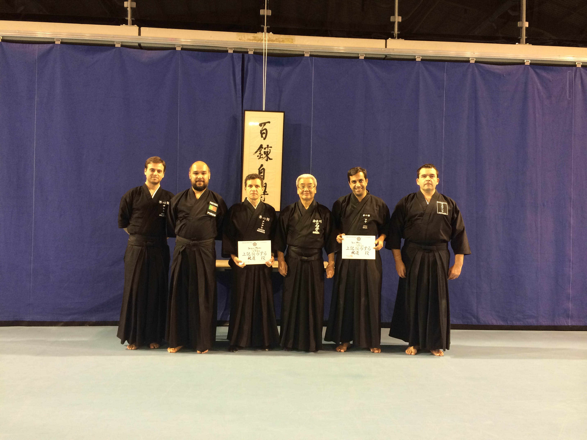
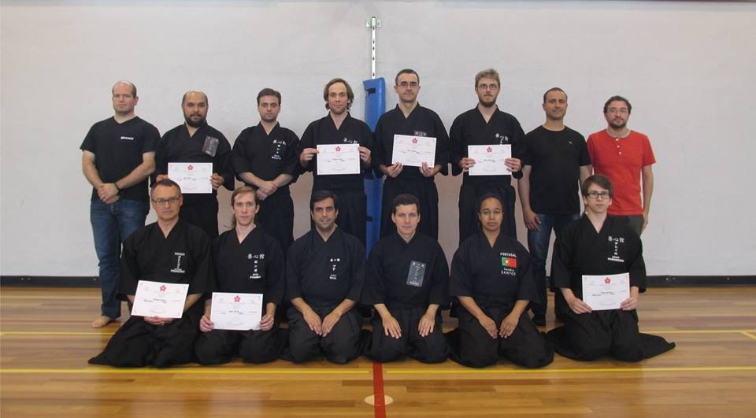
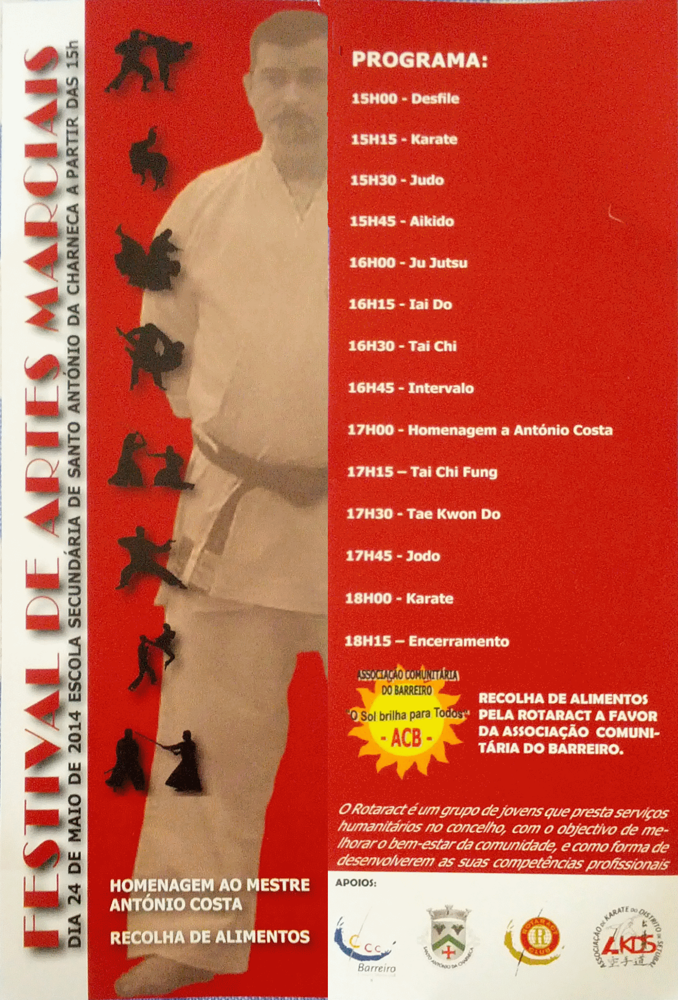
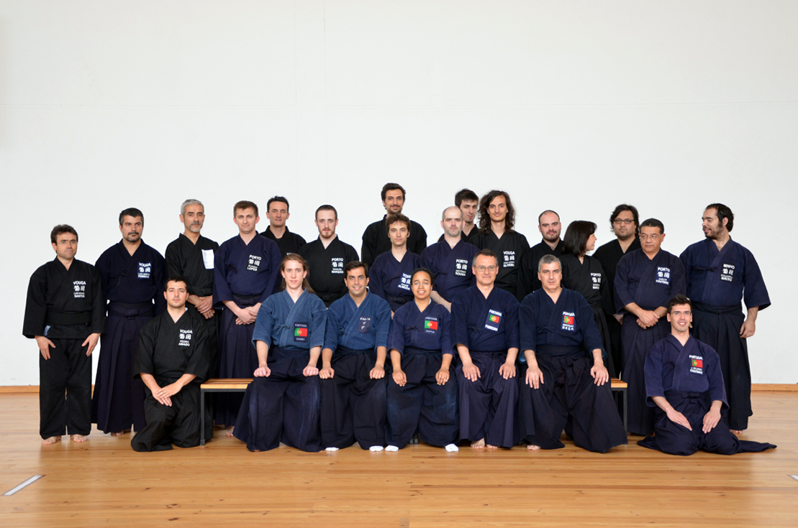
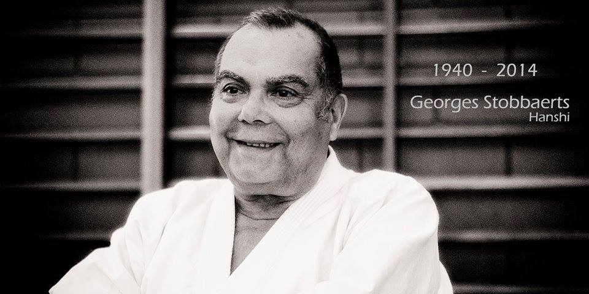

Noticias

2014.08.29
REGRESSO AOS TREINOS
Informamos os nossos associados e eventuais interessados que os treinos irão recomeçar no próximo dia 6 de setembro, na Escola Secundária D. Filipa de Lencastre, com o horário habitual.2014.08.18
RESULTADOS DOS EXAMES NO SEMINÁRIO DE VERÃO

Decorreu nos passados dias 1 a 5 de agosto o Seminário de Verão de Iaido e Jodo, em Eindhoven, na Holanda, no qual vários membros do Zenshinkan-ICL estiveram presentes, e alguns realizaram também exames de passagem de graduação Dan.
Assim, é com grande entusiasmo que anunciamos que o senpai João Maia e o nosso sensei, Joaquim Mendes, ambos realizaram e tiveram sucesso nos seus exames de Yondan (4 Dan) em Jodo!
Em nome de todo o clube, os nossos parabéns aos dois!
2014.06.26
RESULTADOS DO TAIKAI NACIONAL DE IAIDO DE 2014

No passado domingo, dia 22 de junho, decorreu o Taikai Nacional de Iaido de 2014. Nesta ocasião tivemos a oportunidade de rever os nossos companheiros do Minho e de Aveiro, em mais um torneio em que tanto os colegas mais experientes como os mais iniciados deram o seu melhor e contribuíram para o sucesso deste evento.
Os resultados do taikai foram os seguintes:
Categoria Mudan/Shodan:
- Diogo Paulo (Zenshinkan-ICL)
- João Almeida (Zenshinkan-ICL)
- Diogo Guerreiro (Zenshinkan-ICL)
Categoria Nidan/Sandan:
- João Pombo (Zenshinkan-ICL)
- João Pires (Zenshinkan-ICL)
- António Pinheiro (CJIVouga)
- Luis Rascão (Zenshinkan-ICL)
Os nossos sinceros agradecimentos aos participantes, aos árbitros, e a todos os que contribuíram para a organização e realização deste evento.
2014.05.20
FESTIVAL DE ARTES MARCIAIS - HOMENAGEM AO ANTÓNIO COSTA

No próximo sábado, dia 24 de maio, o Zenshinkan-ICL participará num Festival de Artes Marciais, em que será feita uma homenagem póstuma ao nosso saudoso colega António Costa, infelizmente falecido no ano passado.
O Zenshinkan irá realizar demonstrações de Iaido e Jodo. O festival terá lugar na Escola Secundária de Santo António da Charneca, no Barreiro, e terá início a partir das 15h.
Durante este festival serão também recolhidos alimentos pela associação Rotaract, a favor da Associação Comunitária do Barreiro.
Todos os membros do clube, bem como amigos, familiares e conhecidos, estão convidados a vir assistir a este evento.
2014.05.20
RESULTADOS DO TAIKAI NACIONAL DE JODO DE 2014
No passado dia 18 de maio realizou-se, em Coimbra, o Taikai Nacional de Jodo de 2014. Foi novamente um agradável momento de reunião e convívio entre os jodokas portugueses.
Os resultados do taikai foram os seguintes:
CAMPEONATOS INDIVIDUAIS:
Categoria Mudan:
- Henrique Cachetas (CJIMINHO)
- Diogo Paulo (Zenshinkan-ICL)
- João Mauro Rocha (CJIMINHO)
- José Ricardo Coutinho (CJIMINHO)
- Eduardo Brito (CJIMINHO)
- João Pires (Zenshinkan-ICL)
- CJIMinho 2
- Zenshinkan-ICL
- CJIMinho 1
Árbitros presentes:
- Sandra Santos, 4 Dan
- João Maia, 3 Dan
- Hugo Boleto, 3 Dan
- João Pombo, 3 Dan
2014.04.17
TAIKAI NACIONAL DE JODO DE 2014

No próximo dia 18 de maio de 2014 realizar-se-á o Taikai Nacional de Jodo de 2014, em Coimbra.Será mais uma valiosa experiência de competição saudável e convívio com os nossos colegas e companheiros de todo o país, que como nós se dedicam à prática e ensino do Jodo em Portugal.
Todos os membros federados da APJODO são elegíveis para participar, e são encorajados a inscrever-se.
Todas as informações relevantes acerca do Taikai, em particular a sua localização, horário, programa, preços e contactos, podem ser consultadas aqui, bem como a ficha de inscrição para o Taikai.
2014.01.10
GEORGES STOBBAERTS SENSEI

É com tristeza que partilhamos que, no passado domingo, dia 5 de janeiro, faleceu o sensei Georges Stobbaerts, um dos grandes pioneiros do Aikido em Portugal, sendo igualmente praticante de Kendo e Judo.
O sensei Stobbaerts foi também um dos primeiros introdutores do Iaido no nosso país.
Aqui deixamos uma palavra de reconhecimento, e um saudoso adeus, a um homem europeu que, como nós, se aventurou a descobrir os segredos das artes marciais japonesas.